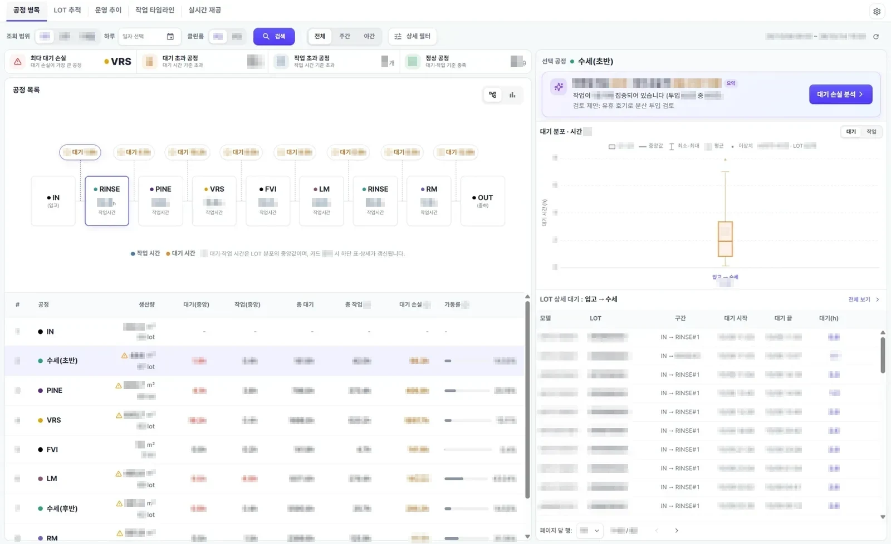
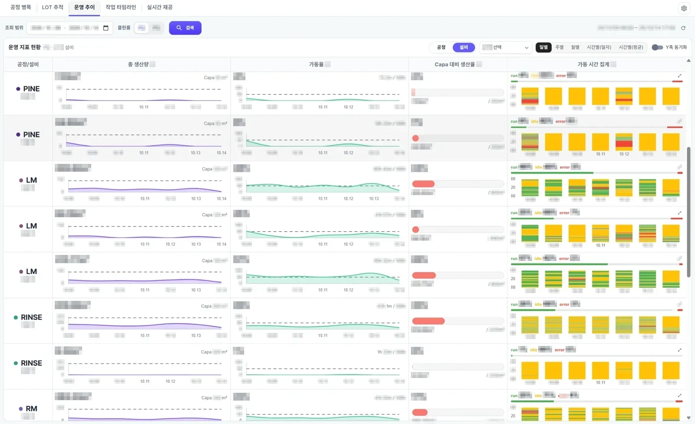
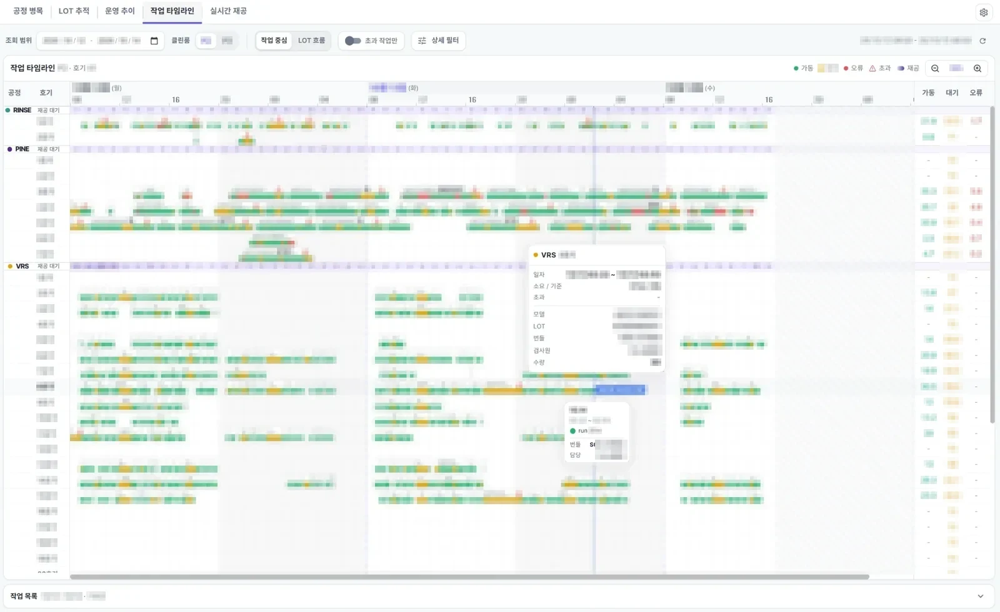
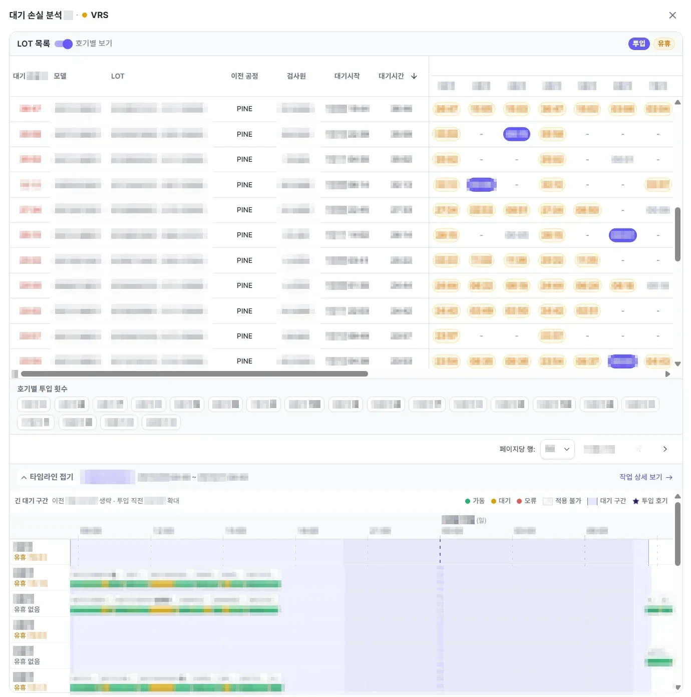
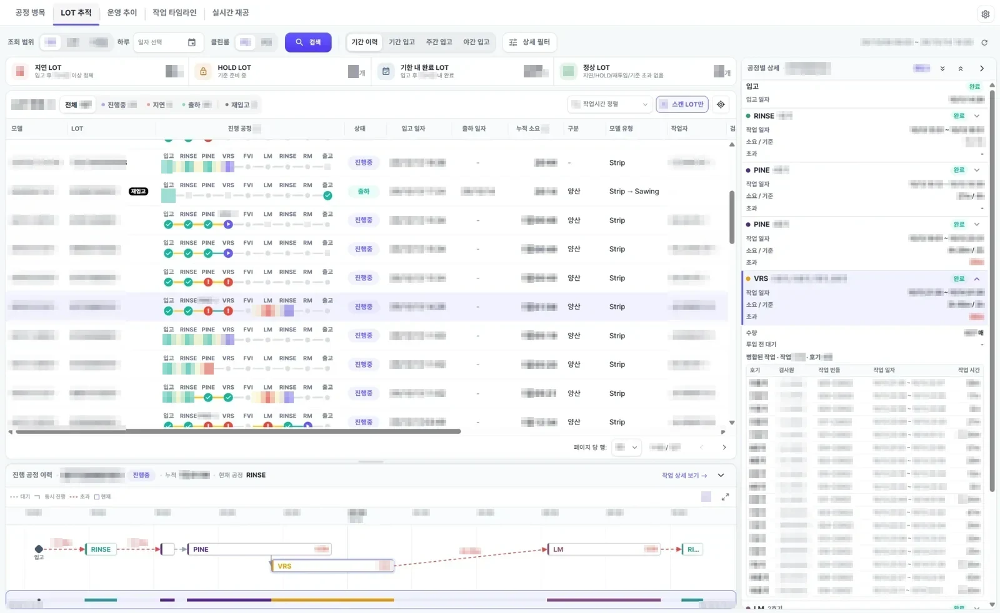
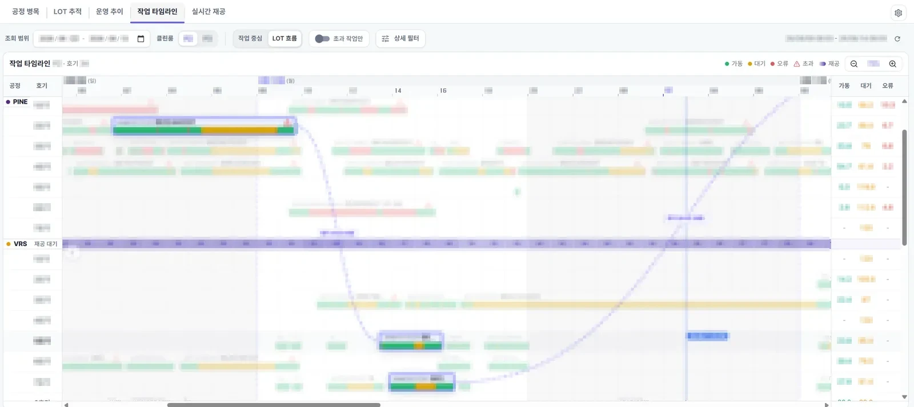
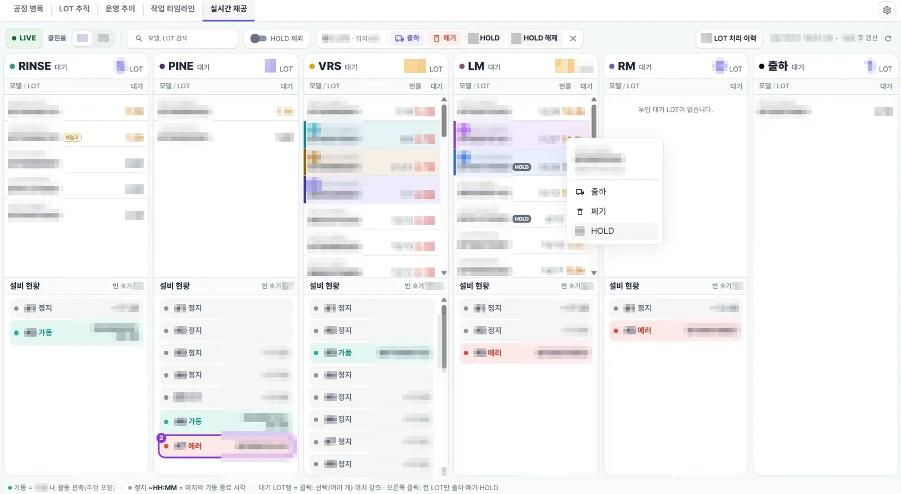

PROBLEM
- 생산 현장에는 병목 구간과 KPI 성과를 데이터로 확인할 화면이 없어, 어느 공정에서 왜 막혔는지를 경험으로 판단했습니다.
- 구현 중에도 집계 기준이 자주 바뀌었고 화면마다 따로 구현돼 있어서, 같은 지표라도 화면마다 기준이 어긋날 수 있는 구조였습니다.
화면이 답해야 할 질문부터 정했습니다
"어디서 막혔나 / 왜 오래 걸렸나 / 근거를 바로 볼 수 있나" 세 질문을 기준으로 화면을 기획했습니다. 병목 원인을 미투입·대기 누적·설비 편중·제품 설정 미등록·설비 에러·작업자 교대 여섯 유형으로 먼저 정리하고, Figma로 흐름을 잡은 뒤 구현했습니다. 병목을 찾는 공정 병목·제품 추적·작업 타임라인·실시간 대기 현황과, 성과 지표를 기간·설비·공정별로 비교하는 운영 추이까지 다섯 화면으로 나눠 같은 데이터를 여러 관점에서 볼 수 있게 했습니다.
최대 병목가장 큰 대기 손실 공정을 맨 위에
▸
분포공정별 대기·작업 시간 Boxplot
▸
근거 보기기다리는 동안 비어 있던 설비가 있었나
▸
작업 타임라인그 시간대 설비별 실제 가동 상태

공정 병목. 가장 큰 대기 손실 공정을 맨 위에 두고, 흐름도 → 분포 → 제품 단위 근거로 내려갑니다. (실제 운영 화면, 제품 정보·작업자는 모자이크)

운영 추이. 생산량·가동률·생산 능력(Capa) 대비 생산율 같은 성과 지표를 일·주·월·시간 단위로, 설비·공정별로 나눠 데이터에 맞는 차트(선형·막대 등)로 비교합니다.

작업 타임라인. 설비별 실제 가동 구간과 공정별 대기 수를 시간축으로 봅니다. (막대 글자 모자이크)
지표를 직접 정의했습니다
- 계산할 수 있는지부터 확인: 화면에 보여줄 지표마다 DB 테이블 구조와 관계(제품·이력·레시피·설비 가동 기록)를 직접 분석해 어떤 데이터로 계산할 수 있는지 먼저 확인했습니다. 계산 기준을 정리해 검토를 받은 뒤 API와 화면을 구현했고, 화면마다 달랐던 제품 조회 기준은 공통 기준 문서로 정리해 공유했습니다.
- 대기 손실 = 제품이 기다리는 동안 그 제품을 넣을 수 있었던 설비의 최대 유휴 시간. "빈 설비가 있었는데 안 넣었다"를 설비 단위로 증명합니다.
- 대기·작업 시간의 대표값은 평균 대신 중앙값으로 보여 줍니다. 오래 멈춰 있던 소수 제품이 평균을 크게 끌어올려 현장 체감과 맞지 않았기 때문입니다.
- 업무일은 08시 기준, 주/야는 경계에 걸친 작업을 나눠 집계해 주간 + 야간 = 전체가 항상 성립하게 했습니다.

대기 손실 분석. 제품이 기다린 시간 동안 각 설비가 얼마나 비어 있었는지를 설비 단위로 보여 줍니다. (실제 운영 화면, 제품 정보·작업자는 모자이크)
숫자를 믿을 수 있게 만들었습니다
화면값과 DB SELECT 결과를 8개 항목으로 직접 대조했고, 그 과정에서 주/야 합계 불일치, 신뢰할 수 없는 요약 테이블 등 버그 4건을 찾아 고쳤습니다. 제품 조회 기준(정식 입고된 제품만, 이름이 다르게 저장된 같은 제품 묶기, 출하 판정)은 문서로 통일해 KPI 대시보드와 출하 관리 화면이 같은 값을 보이게 했습니다.

제품 추적. 진행 공정 칸에서 초과 공정과 반복 작업(×N)을 보고, 선택하면 입고~출하 흐름이 시간축으로 펼쳐집니다.

작업 타임라인 제품 흐름 모드. 한 제품의 경로와 그 시간대 다른 설비 상황을 함께 봅니다. (막대 글자 모자이크)
작업 타임라인 조회 범위
7▸90일
요청 90개 → 14개 · 서버 스캔 720일치 → 196일치
제품별 검사 이미지 폴더를 찾은 비율 (최근 90일)
78▸100%
출하 시각 과대 계상 (제품 체류 시간)
평균 8.1시간 과대 계상 제거 (최대 13.8시간)
날짜만 보고 23:59로 채우던 출하 시각을 실제 시각 필드로 교체. 값이 없는 과거 기록은 "시각 추정"으로 표시
어려웠던 문제
같은 제품인데 이름이 다르다: 표시용 문자열을 식별자로 쓰던 구조 바꾸기
- 공정을 다 끝낸 제품이 중간 공정에 13일째 대기로 뜨고, 특정 제품은 폐기 처리가 실패했습니다.
- DB를 먼저 보니 같은 제품이 조금씩 다른 이름으로 여러 행에 나뉘어 있었고, 화면의 모델명은 설비 기록값과 제품 마스터값 두 출처에서 섞여 오고 있었습니다.
- "모델명 하나로 통일하자", "이름만 같으면 묶자"는 제안은 실측으로 검토했습니다. 같은 이름 818그룹 중 56개는 모델이 달라서(최대 8종), 이름만으로 묶으면 무관한 제품이 함께 출하·폐기됩니다.
- 응답 직전에 지워지던 제품 ID를 살려 처리 대상을 ID로 지목하고, 실제 처리는 같은 제품으로 묶인 그룹 전체로 펼치게 바꿨습니다.
- 수정 후 원천 테이블로 다시 계산하는 검증 스크립트를 따로 만들어 대조했습니다.
어느 화면에도 안 보이던 제품 9건 복구 · 원천 재계산 대조 45건·47건 불일치 0
"검사 진행률이 안 맞는다" 제보 3건, 원인은 3개
- 제품은 여러 묶음으로 나눠 검사하는데, 화면의 "검사한 묶음 / 전체 묶음" 수가 실제와 달랐습니다. 증상은 같았지만 하나의 버그로 묶지 않고 분모·분자·데이터 생성 시점을 따로 추적했습니다.
- 폴더 번호의 4자리 0 채움 불일치 → NAS 검사 이미지 폴더 165,926개를 전수 스캔해 형식을 확인한 뒤 수정했습니다.
- 절단 공정을 거치는 제품을 데이터 저장 단계에서 잘못 구분 → 제품 등록 화면이 연동되지 않은 부분까지 거슬러 올라가 모델 21개·제품 약 119건의 영향 범위를 정리하고, 집계 기준 변경이라 합의 후 적용하도록 넘겼습니다.
- 설비 에러로 생긴 빈 묶음 기록 → "1장짜리 묶음은 거르자"는 안은 정상 1장 묶음 반례를 찾아 스스로 폐기하고, 고치지 않기로 제안했습니다.
최근 90일 미매칭 2,382건 해소 · 1년간 특정 고객사 제품의 검사 묶음 정보 100% 누락 원인도 별도로 찾아 해결
타임라인을 7일에서 90일로: 조회와 렌더를 동시에
- 조회 구간을 고정 기준일에서 7일 단위로 끊어 같은 날짜가 항상 같은 묶음에 들어가게 했습니다. 지난 묶음은 캐시를 영구 유지하므로 범위를 20일 넓혀도 재요청은 3번입니다.
- 90일이면 작업 카드가 1만 개 수준이라 화면 근처만 그리는 가로 가상화를 직접 구현했습니다(rAF로 프레임당 한 번, 반 화면 단위로 갱신).
- 카드마다 붙어 있던 툴팁 수백 개를 영역당 하나 + 이벤트 위임으로 바꾸고, 행 호버와 드래그는 상태 대신 DOM을 직접 바꿔 전체 재렌더를 없앴습니다.
현장에서 쓰는 처리 기능

실시간 대기 현황. 여러 제품을 고르면 번호·색으로 흩어진 위치가 표시되고, 상단 또는 우클릭으로 출하·폐기·보류합니다. (실제 운영 화면, 제품·고객 정보는 모자이크)
- 실시간 대기 현황 화면에서 대기 제품을 여러 개 골라 출하·폐기·보류하고 되돌릴 수 있게 했습니다. 전용 이력 테이블을 만들었다가, 미출하 행 1,446건을 실측해 이전 값 저장이 필요 없음을 확인하고 기존 출하 취소 로직을 재사용하는 쪽으로 바꿔 DB 스키마 변경 없이 구현했습니다.
- 다른 사람이 먼저 처리한 값은 덮어쓰지 않고(FOR UPDATE), 제품마다 성공·실패를 따로 돌려줘 실패분만 다시 시도할 수 있습니다. 진행 중이던 자동 갱신 응답이 처리 결과를 덮어쓰지 않게 갱신 요청을 끊고 다시 조회합니다.
- 현장 모니터는 연세가 있으시거나 화면 조작이 익숙하지 않은 분들도 함께 보십니다. 그래서 화면이 좁아져도 글자 크기는 줄이지 않고, 긴 제품 번호는 두 줄로 나눠 끝까지 읽히게 했습니다.